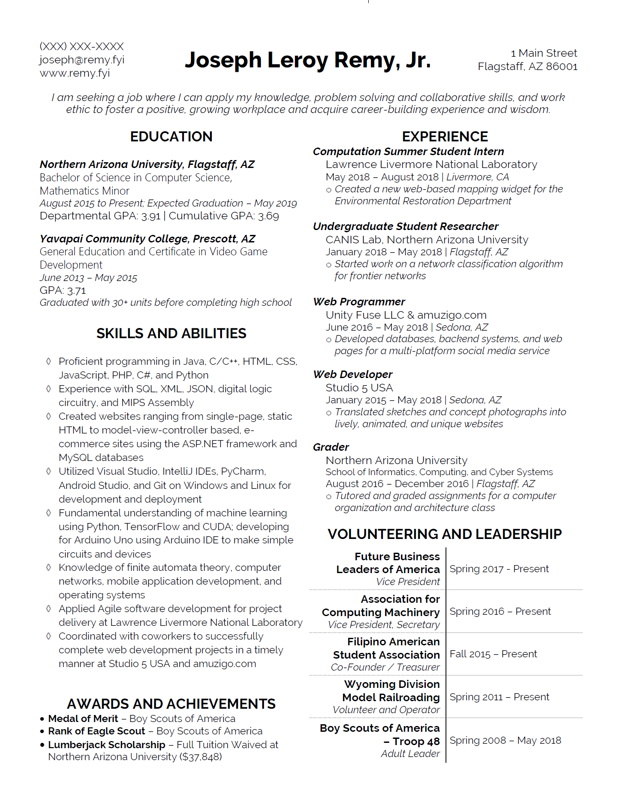

Career Fair Prep:
Resumes, Cover Letters, and more
Presented by: Joseph Remy, Jr. - remy@nau.edu
Northern Arizona University
September 20, 2018
Overview
- Resumes
- Cover Letters
- Career Fairs
Resumes
What is it and what's the point
About Resumes
- Succinct document
- Describes your Education, Expierence, Expertise
- One page
CV's are usually multi-page resumes
Parts of a Resume
| Header | Name, Contact Info, (if applicable) Objective Statement |
| Education | University, Community College, (if 2nd year or below) High School |
| Experience | Internships, Jobs, ProjectsFirst: Applicable work, Followed by: Other expierences |
| Expertise and Activity | Skills from Expierence/Education, Other useful information (leadership, certifications, etc.) |

Do and Don'ts
- You will be questioned on your content
- Do NOT lie
- Know your resume
- Focused and brief
- Not too broad
- Be concise, avoid sentences
- Use Action words - Link
Do and Don'ts
- Applicable content is necessary
- Focus on the job you want
- Specific details - code, development environments, etc.
- Technical work
- Example: Applying for programming internship
- Do: list IDEs, langs., CS topics, relevant info
- Don't: "Pretty please, give me", inapplicable details
Lastly...
Have creative freedom!
This document represents YOU
Cover Letters
What is it and what's the point
About Cover Letters
- Brief document
- Affirmation that you want the position
- Combines requirements and resume
(internship or job listing) - One page
Parts of a Resume
| Header | Your Name/Address, Date, Their Name/Address |
| Introduction | Summarize the position and highlight skills/expierence briefly |
| The MEAT | Further detail with specific examples "Mention Expertise and Apply Talents" |
| Conclusion | Thank you for consideration and welcome further discussion (Opens the door to more conversation) |

Do and Don'ts
- Again... You will be questioned on your content
- Do NOT lie
- Know your cover letter
- Focused and brief
- Concise, easy to read, not too broad
- Brings context to why you should get the position
- Use Action words - Link
Do and Don'ts
- Applicable content you want to highlight
- Hone in on the job
- Specific details - languages, environments, projects, etc.
- Technical work
- Example: Applying for programming internship
- Do: Pair skills/expertise with the requirements
- Do: Be courteous and thankful
- Don't: "Pretty please, give me"
Lastly...
Make a well-formed document
Highlight why they want YOU
What is it and what's the point
About LinkedIn
- Professional social media
- Similar to online resume, but more in-depth
Projects, Patents, Recommendations, Blogging

Importance of LinkedIn
- Readily accessible
- Professional online presence
- Making and building connections
- Expands upon YOU

Getting Started
- Professional photo
- Concise headline
- Post what you think is valuable
- Connect with people you know and might become meaningful in the future.
- Include competencies, fundamental understanding, and software in your summary
Lastly...
Make it your own - be unique
OWN IT! It is all about you
Career Fairs
What is it and what's the point
About Career Fairs
- We all want jobs, but some want them MORE
- Speed dating with numerous companies
Can't be too picky, but make sure it is something you want
- First impressions are important
Before you go
- Update your resume and LinkedIn
- Know before you go
Research the companies and positions BEFORE - Practice your elevator speech
I didn't have an elevator speech, but do prepare talking points - Complete the CEFNS/CEIAS Career Fair Checklist - Link
Attending the Career Fair
- Bring at least 10 copies of your resume
Bring them in a folder or binder - Dress business formal - Link
- Bring your student ID
- There's a Courtesy Booth
Great for last-minute and on-site outfit and hair check ups - Your name tag matches the color of the recruiting tables
Talking to Recruiters
- Do NOT Lie! Be honest if you don't know
- Don't use buzzwords just to sound cool.
Like anything you don't know, they can tell - Act natural and don't stress.
Trust me - They want to see the best in you - Don't be spooked if they don't take your resume
You might just apply online OR apply in person - You might be asked to schedule an interview

Lastly...
Be efficient, but also don't stress
OWN IT! Be energetic. Show that you are ready to take some interviews!
Resources
Other ways to prepare
Simply put...
Just watch for the bombardment of emails
From:
Handshake, NAU Career Dev., CEIAS/CEFNS, etc.
Handshake
- More than just career fairs
- There are also job posting, other fairs/networking events, tips and guides, etc.
- URL: https://nau.joinhandshake.com
NAU Career Development
- Career advising
Mock interviews, resume workshops, job search - Help you find opportunities
- Sign up for CEFNS Career Development - Link
- URL: https://nau.edu/career
Thank You!
Presented by: Joseph Remy, Jr. - remy@nau.edu
Northern Arizona University
September 20, 2018